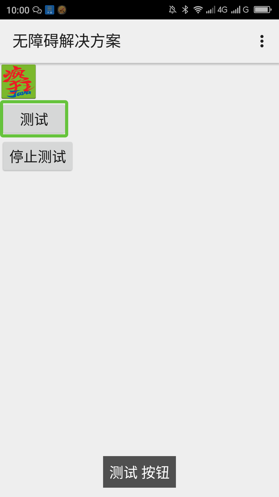

屏蔽无障碍焦点（支持api 4）____20160513
【问题描述】
一些背景图片、分隔符等不能操作没有什么实际意义的控件的焦点应该屏蔽，这样可以加快用焦点导航的用户浏览界面的速度，让用户更快的找到自己想操作的控件。在触摸屏用手势浏览的时候如果有大量的分隔符等没有意义的控件会导致用户滑动浏览的速度降低，影响用户使用产品的效率。
【问题代码】
【问题解决方案描述】
屏蔽无障碍焦点虽然可以用android:importantForAccessibility=”no“，但是此属性有一个限制只能在api 16以上的系统生效。除了此属性可以做到屏蔽无障碍焦点之外，我们还可以使用AccessibilityNodeInfo类的setVisibleToUser()方法来屏蔽无障碍焦点，当调用setVisibleToUser(true)的时候表示此节点对用户不可见，那么屏幕阅读器就不会获得此控件的焦点。调用setVisibleToUser(false)代表此节点对用户可见，屏幕阅读器能获得此控件的焦点。标准控件可以添加View.AccessibilityDelegate之后重写onInitializeAccessibilityNodeInfo()方法在此方法中调用AccessibilityNodeInfo.setVisibleToUser()方法。自定义控件可以直接重写onInitializeAccessibilityNodeInfo()方法来调用此方法。如果想支持api 4可以使用v4包中的AccessibilityNodeInfoCompat和View.AccessibilityDelegateCompat达到此目的。
注：屏蔽焦点建议使用此方法，此方法同时可以屏蔽焦点导航设备的焦点，如键盘导航的焦点。
【前后效果图对比】
|  |
| 优化后，图像的焦点被屏蔽； |